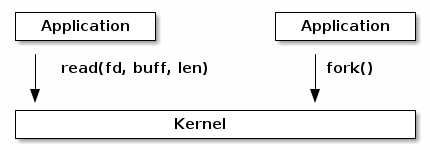
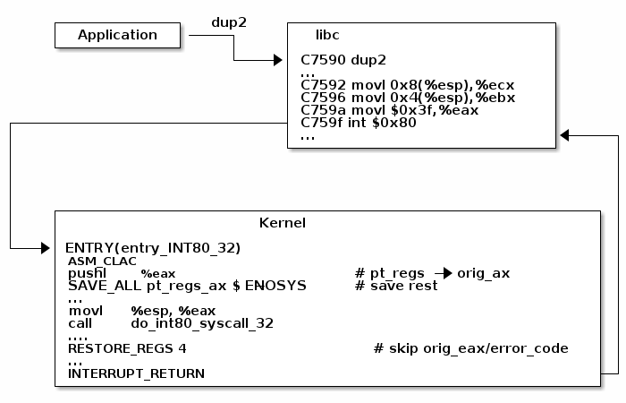
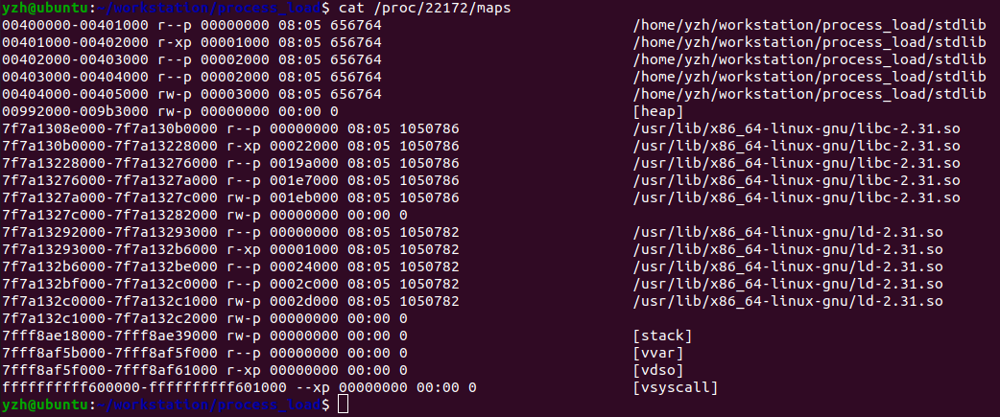

syscall_notes
Syscall Notes
在计算机中，系统调用是一种编程方式，计算机程序通过该方式向操作系统的内核请求服务。系统调用是一种计算机程序与操作系统互动的方式：计算机程序通过系统调用向操作系统内核请求服务，而系统调用则会通过API(Application Program Interface)向用户程序提供操作系统的服务。
系统调用提供了进程和操作系统之间的接口，以允许用户级进程请求操作系统的服务。系统调用是内核系统的唯一入口点， 所有需要资源的程序都必须通过系统调用获取相应资源。
关于中断
ref. 《汇编语言》(第4版，王爽著)
任何一种通用的CPU都必须具备一种能力，即可以在执行完当前正在执行的指令之后，检测到从CPU外部发送过来的或内部产生的一种特殊信息，并且可以立即对所接收到的信息进行处理。
这种特殊的信息就是所谓的中断(Interrupt, sometimes refered to as trap)信息，中断信息会使CPU不再继续从刚执行完的指令向下执行，而是转而去处理这个特殊的信息。中断信息会要求CPU马上进行某种处理，并向所要进行的该种处理提供了必备的参数的通知信息。
中断信息可以来自CPU的内部或者外部，来自CPU内部的中断信息通常被称为内中断，来自CPU外部（外设，比如键盘）的中断信息通常被称为外中断，这里主要介绍内中断。
内中断的产生
CPU一般会在下面几种情况下产生内中断：
- 除法错误
- 单步执行
- 执行into指令
- 执行int指令
在讨论各种中断的具体含义之前，需要先了解中断信息是如何让CPU区分不同的类型的中断信息的。
CPU首先需要知道的是所接收到的中断信息的来源，即中断源，因此中断信息中必须包含识别来源的编码。一般使用中断类型码来标识中断信息的来源。
比如在8086CPU中，上面中断来源在中断类型码为：除法错误：0；单步执行：1；执行into指令：4；执行int指令，int指令的格式为 int n，其中n为一个立即数，就是提供给CPU的中断类型码。
中断向量表
除了中断源，CPU还需要知道如何处理中断，而这由中断处理程序决定，也就是让CPU接收到中断信息后转而去执行该中断信息对应的中断处理程序。
因此CPU需要某种方式获取到对应中断处理程序的入口地址。而中断向量表就是为了让CPU知道各种中断处理程序的入口地址。所谓中断向量其实就是中断处理程序的入口地址，中断向量表中存储了各类中断信息所对应的中断向量。
中断向量表通常位于内存中的某个预定的位置，比如在8086CPU中，中断向量表指定放在内存地址0处，从内存0000:0000到0000:03FF 的1024个单元中存放这中断向量表。
所以，CPU在接收到中断信息后，会根据中断类型码找到该中断的中断向量，并设置程序计数器到该中断向量，从而处理该中断。
中断过程
在CPU执行完中断处理程序后，需要返回到原来的地址继续执行，所以在中断过程中设置程序计数器之前，还需要将程序计数器原来的值保存起来。
比如在8086CPU中，CPU收到中断信息后，所引发的中断过程如下：
- 从中断信息中读取中断类型码
- 将标志寄存器入栈，因为下一步就要修改标志寄存器的值，所以这里需要先保存原来的值
- 设置标志寄存器的第8位TF和第9位IF的值为0
- 保存当前程序计数器的值
- 从中断向量表中读取该类型中断对应的中断向量，并设置程序计数器的值为该中断向量
从中断处理程序回到原来执行的地址则需要使用iret指令，该指令的功能用汇编语法描述为：pop PC; pop flag，也就是恢复程序计数器，然后恢复标志寄存器原来的值。
Linux系统调用
ref. linux kernel labs
类似于函数库中的API，系统调用是内核向高层(high level)用户应用提供的服务。

然后，实际上系统调用与常规的函数调用有很大的区别，系统调用是用于完成下列任务的特定的汇编指令：
- 设置相关信息以识别系统调用以及参数
- 触发内核模式的切换
- 收集系统调用执行的结果
在Linux上，系统调用由系统调用号进行识别，系统调用最多只能接受6个参数。系统调用号和系统调用的参数都是通过指定的寄存器进行传递。
比如在X64的机器上，RAX用于传递系统调用号，而系统调用的6个参数从左到右则分别由%rdi, %rsi, %rdx, %r10, %r8, %r9这几个寄存器进行传递。
系统函数库(e.g.: libc)提供了一些实现系统调用的函数，从而使用户应用能够更方便地使用系统调用。
当发生用户到内核模式的转换时，用户应用执行流程将会被中断并被转移到内核入口点。系统调用入口点将寄存器（其中包含来自用户空间的值，包括系统调用号和系统调用参数）保存在堆栈上，然后继续执行系统调用调度程序(system call dispatcher)。

系统调用调度程序所完成的任务主要是检查系统调用号，然后调用对应的内核函数。下面的代码演示了系统调用掉程序的工作：
1 | |
在X86 32bit的机器上，系统调用号使用EAX寄存器传递，而系统调用的6个参数则分别通过EBX, ECX, EDX, ESI, EDI, EBP寄存器传递。
系统调用表就是系统调用调度器用以将系统调用号映射到内核函数的工具。
下面的代码演示了系统调用表的原理：
1 | |
内核在执行系统调用对应的内核函数时，需要对用户传递来的参数进行处理。因为这些参数都是从用户空间传递过来的，内核无法假设这些参数的正确性，所以必须对其进行彻底的验证。
参数的验证是有必要的，因为系统调用是在内核模式下执行的，所以系统调用在执行期间是能够访问内核空间的，比如对于参数中的指针，必须检查下面两种情况：
- 不允许指向内核空间的指针
- 检查指针是否是有效的
这里之所以不能允许用户应用传递指向内核空间的指针作为参数，是因为内核模式下执行的系统调用接受这样的参数可能会导致意料之外的错误。
比如，用户应用调用一个read()或者write()系统调用，如果传递的指针是指向内核空间的，那么系统调用的执行可能会read()系统调用读取一个文件后对内核空间的内存造成污染。
同样的，如果用户应用传递的指针是无效的，也就是未映射的，或者对只读区域进行写操作，那么会导致内核崩溃。
Virtual Dynamic Shared Object(VDSO)
这项技术是为了对部分系统调用进行加速，具体做法是内核会生成一段用于启动系统调用的指令，这些指令会被格式化为ELF共享目标，并映射到用户空间结束的地址。libc在需要调用系统调用时，将会从VDSO中搜索相关系统调用，并使用其中的指令启动系统调用。
VDSO技术包含虚拟系统调用(Virtual System Call, vsyscalls)，之所以称其为虚拟系统调用是因为这些虚拟系统调用能够直接在用户空间运行。vsyscall也是VDSO中的一部分，它们能够从VDSO的内存页中访问数据，这些数据要么是静态的，要么是由内核在VDSO内存区域中的单独的读写映射区域(separate read-write map)中修改的。
通常使用/proc/self/map文件读取到的目标进程的内存映射中，除了目标进程对应的二进制文件的映射区域，堆区域，栈区域以及目标进程所依赖的共享目标的映射区域以外，还包含另外三个额外的区域: “vdso”, “vsyscall”, “vvar”，如下：

这三个额外的区域就是为了VDSO技术是映射的内存区域，其中"vdso"就是前面提到的由内核生成的用于启动系统调用的指令，被格式化为ELF共享目标，和普通的代码段一样，执行权限是"RX"。“vsyscall"就是虚拟系统调用所使用的内存映射区域，可以看到这块区域的执行权限是"X”，也就是用户应用无法直接访问这块区域，但是这块区域中存放着可执行的代码，"vvar"就是vsyscall与VDSO进行数据交互所使用的内存映射区域，执行权限为只读的。